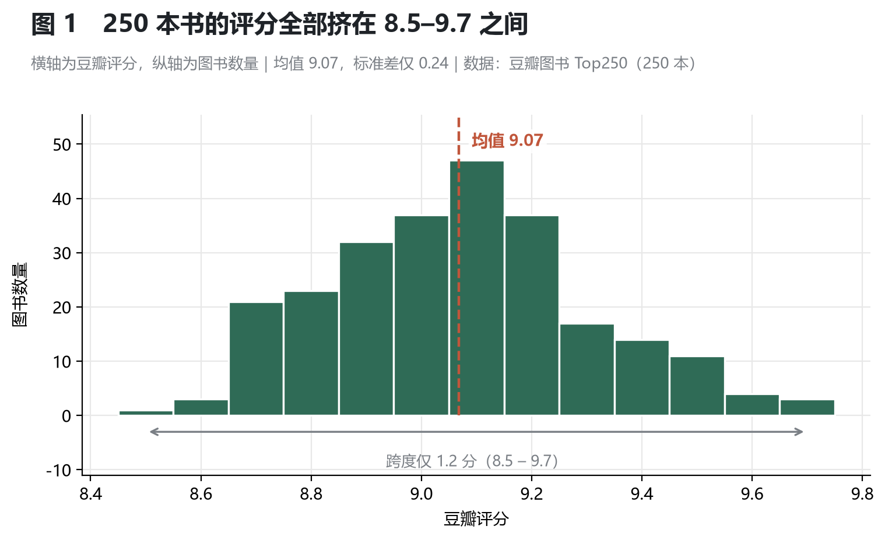
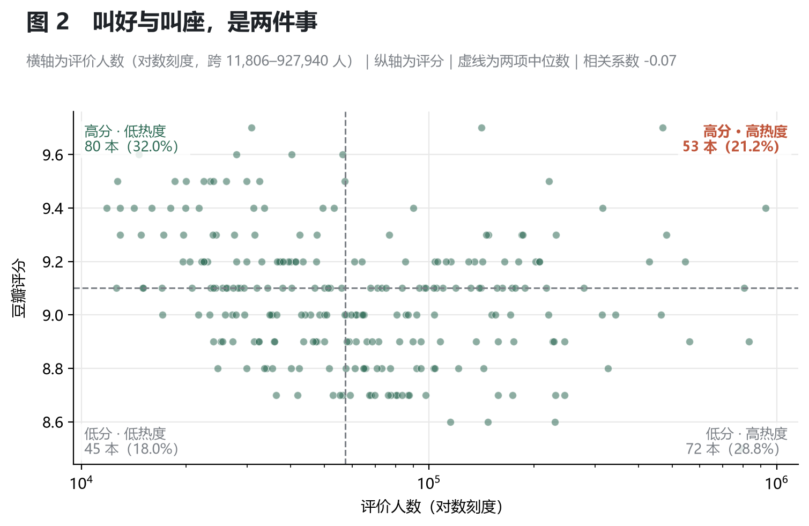
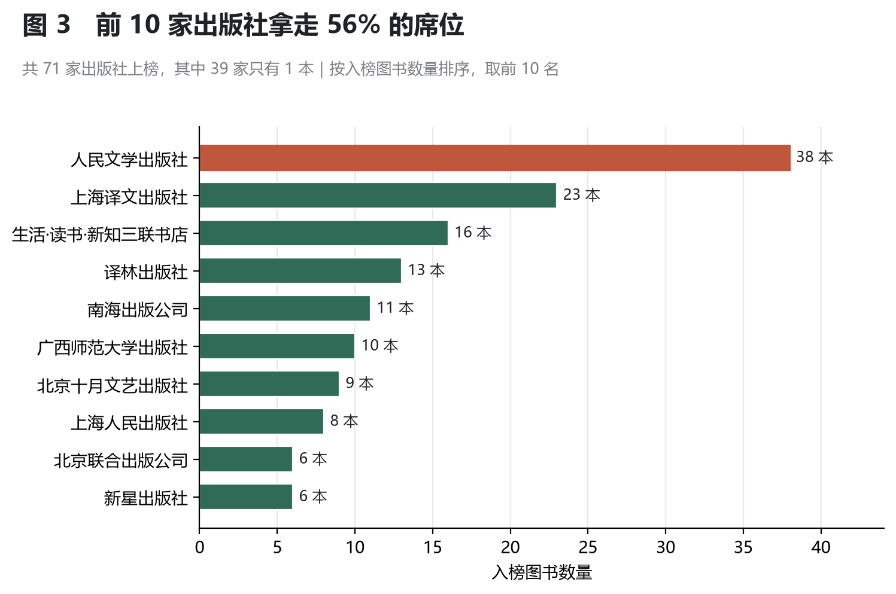
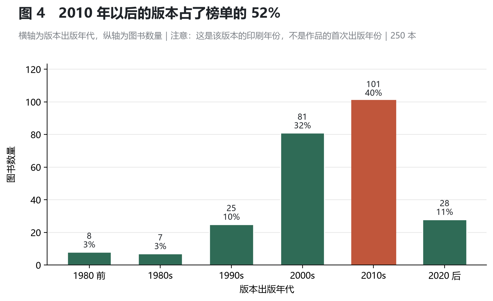

用 250 本书的评分、评价人数、出版社和版本年份，回答一个问题：这份榜单到底是怎么构成的。
榜单每天被人翻，但它只给出排名，不解释构成——为什么有的书评分更高却排在后面？哪些出版社在榜上反复出现？榜上的书到底有多"老"？这个项目用一次完整的数据分析流程（采集 → 清洗 → 探索 → 可视化 → 结论）把这几个问题拆开来看。
| 数据规模 | 字段 | 采集请求 | 分析维度 |
|---|---|---|---|
| 250 本图书 | 11 → 15 列 | 10 次 | 评分 / 热度 / 出版社 / 年份 |
| # | 结论 | 一句话依据 |
|---|---|---|
| 1 | 榜内评分几乎没有区分度 | 250 本全部落在 8.5–9.7，标准差仅 0.24 |
| 2 | 口碑与热度是两条独立的赛道 | 评分与评价人数相关系数 −0.07，两者兼得者仅 21.2% |
| 3 | 榜单席位集中在少数出版社 | 71 家上榜，前 10 家占 56%；第一名一家 38 本 |
| 4 | 年份反映的是版本，不是作品 | 84% 为 2000 年后的版本，不能读成"榜单偏爱新书" |
豆瓣图书 Top250 是一个长期存在、被广泛引用的书单，但它只呈现一个结果：第几名是哪本书。而真正影响"一本书能不能进榜"的因素，榜单本身不会告诉读者。
这个项目从三个具体疑问出发：
| 目标 | 具体要求 |
|---|---|
| 描述 | 摸清 250 本书的评分、热度、价格、年份、出版社的基本分布 |
| 关联 | 检验"评分高是否等于看的人多"这一常见假设 |
| 归因 | 从出版社与年份两个角度，解释榜单的构成特征 |
| 工程 | 走完一条可复现的链路：采集 → 清洗 → 分析 → 可视化 |
项目定位为描述性分析，只使用常规统计与分组对比，不涉及建模与预测。
| 阶段 | 做什么 | 工具 | 产出 |
|---|---|---|---|
| ① 数据采集 | 请求 10 个列表页，解析 11 个字段 | requests + BeautifulSoup | data/books_raw_*.csv、html_cache/ |
| ② 数据清洗 | 去重、缺失处理、格式与类型转换 | pandas | data/books_clean_*.csv |
| ③ EDA 探索 | 描述统计、分组对比、相关性检验 | pandas | 终端统计结果 |
| ④ 可视化 | 4 张成品图 | matplotlib | figures/fig1–fig4 |
| ⑤ 结论输出 | 结论、局限性、优化方向 | Markdown | 本页 |
两个设计上的取舍：
html_cache/，解析规则改了可以离线重跑，不重复请求对方服务器。books_raw.csv 永不覆盖，所有清洗动作都在新文件上完成，任何一个数值都能回溯到原始文本。| 环节 | 工具 | 版本 | 用途 |
|---|---|---|---|
| 采集 | requests | 2.34.2 | 发起 HTTP 请求、维持会话 |
| 解析 | BeautifulSoup4 + lxml | 4.15.0 / 6.1.3 | 解析 HTML，提取字段 |
| 清洗与分析 | pandas | 3.0.6 | 去重、缺失处理、类型转换、分组统计 |
| 可视化 | matplotlib | 3.11.2 | 绘制 4 张静态图 |
运行环境 Python 3.13。
douban-top250-portfolio/
├── index.html 首页：四图与结论（GitHub Pages 入口）
├── project.html 项目背景与目标
├── dashboard.html 六图可视化看板
├── report.html 本页：完整分析报告
├── report.md 本页的 Markdown 源文件
├── _config.yml Pages 配置
├── README.md 仓库简介
├── requirements.txt 依赖清单
├── spider_top250.py ① 采集：输出 data/books_raw_*.csv 与 html_cache/
├── clean_and_eda.py ② 清洗 + EDA：输出 data/books_clean_*.csv 与 figures_eda/
├── visualize_basic.py ③ 可视化：输出 figures/fig1–fig4
├── data/
│ ├── books_raw_20261023.csv 原始数据（250 × 11，未做任何修改）
│ └── books_clean_20261023.csv 清洗后数据（250 × 15，分析用）
└── figures/
├── fig1_评分分布.png
├── fig2_口碑与热度.png
├── fig3_出版社集中度.png
└── fig4_出版年份分布.png
pip install -r requirements.txt
python spider_top250.py # 采集，约需 1 分钟（含 3–5 秒随机延时）
python clean_and_eda.py # 清洗 + EDA，终端会打印全部统计结果
python visualize_basic.py # 生成 4 张图到 figures/
spider_top250.py会先读取html_cache/，缓存命中时不发任何网络请求。仓库未包含缓存文件，首次运行需联网；之后重跑可离线完成。
| 项目 | 说明 |
|---|---|
| 来源 | 豆瓣图书 Top250 榜单公开页面 book.douban.com/top250 |
| 规模 | 共 10 页，每页 25 条，合计 250 条记录 |
| 采集时间 | 2026 年 10 月 23 日 |
| 采集范围 | 仅列表页可见的字段，不进入图书详情页 |
| 用途 | 个人学习与作品展示，不用于商业用途 |
最终采集 11 个字段（比最初设计多 1 个 info_raw，原因见 2.4）：
| 字段 | 含义 | 页面位置 | 示例 |
|---|---|---|---|
rank |
排名 | 页面无直接元素，由分页偏移推算 | 1 |
book_name |
书名 | div.pl2 > a 的 title 属性 |
红楼梦 |
author_raw |
作者信息（原始） | p.pl 文本首段 |
(清)曹雪芹 |
publisher |
出版社 | p.pl 文本倒数第 3 段 |
人民文学出版社 |
publish_date |
出版日期 | p.pl 文本倒数第 2 段 |
1982-3 |
price |
定价 | p.pl 文本最后 1 段 |
59.70元 |
rating |
豆瓣评分 | .rating_nums |
9.7 |
rating_count |
评价人数 | .star .pl |
(470424人评价) |
quote |
一句话短评 | .quote .inq |
都云作者痴，谁解其中味？ |
url |
详情页链接 | a.nbg 的 href |
book.douban.com/subject/1007305/ |
info_raw |
出版信息原文 | p.pl 完整文本 |
(清)曹雪芹 / 人民文学出版社 / 1982-3 / 59.70元 |
整体只有 40 余行有效代码，四个要点：
?start=0,25,...,225，共 10 次请求；requests.Session() 复用连接，避免每次重新握手；html_cache/，再解析。调试解析逻辑时走本地文件，不产生网络请求；random.uniform(3, 5) 秒，并设置 10 秒超时。写代码前先抓了一页下来验证结构，避免按"想当然"的选择器写。实测发现三处与预期不符：
| 坑 | 实际情况 | 处理方式 |
|---|---|---|
| 没有排名元素 | 页面上找不到编号，em、.pic 都是空的 |
rank = start + 页内序号 + 1 |
p.pl 段数不固定 |
第 1 页 25 条中，4 段 10 条、5 段 14 条、6 段 1 条 | 不按段数 if-else，改用"日期锚点"定位 |
| 价格不一定带"元" | 68.00 与 59.70元 同时存在 |
正则提取数字，不依赖单位 |
第二点最容易出错：多出来的段可能是译者（作者 / 译者 / 出版社 / 日期 / 价格），也可能是套装书双价（53.00元/68.00元 里的斜杠）。最初按"倒数第 N 段"切分，导致 3 条记录字段错位（详见 3.4）。
最终方案是以日期为锚点——日期是整串里唯一具备强格式特征的字段：
DATE_RE = re.compile(r"^\d{4}(\s*[-/年]\s*\d{1,2}\s*月?)?(\s*[-/年]\s*\d{1,2}\s*日?)?$")
parts = [p.strip() for p in info_raw.split("/") if p.strip()]
# 从后往前找第一个形如日期的段，作为锚点
date_idx = -1
for idx in range(len(parts) - 1, -1, -1):
if DATE_RE.match(parts[idx]):
date_idx = idx
break
if date_idx >= 0:
item["publish_date"] = parts[date_idx]
item["price"] = "/".join(parts[date_idx + 1:]) # 之后都是价格（可能为空 / 单价 / 双价）
item["publisher"] = parts[date_idx - 1] if date_idx >= 1 else ""
item["author_raw"] = " / ".join(parts[:date_idx - 1]) # 再往前都是作者信息（可能含译者）
else:
item["author_raw"] = " / ".join(parts) # 找不到日期就整串留档，不猜
这个正则兼容 1981-8、2014-6-9、1978年6月、1962 四种写法，250 条记录全部正确落地。
采集前实际核对了 robots.txt：
User-agent: * 分组中没有 Disallow: /，禁止的是 /search、/subject_search、/forum/、/people/*（用户个人页）；/top250 不在禁止列表内，属于允许路径；# Crawl-delay: 5 处于注释状态，不具强制力，但项目仍主动对齐到 3–5 秒间隔。需要说清楚的是：robots 允许不等于平台条款授权批量抓取。这个项目的风险之所以低，原因不是"伪装得像浏览器"，而是总量极小——10 次请求、间隔 3–5 秒、一次性完成、不进入详情页、不采集用户数据。合规的核心是控制总量与范围，而不是研究反爬。
data/books_raw_20261023.csv：250 行 × 11 列，UTF-8 with BOM 编码（Excel 直接打开不乱码）；html_cache/：10 个 HTML 文件，作为解析结果的可回溯依据。原始数据有两处缺失：price 1 条（网页本身未标价）、quote 90 条（36.0%，网页本身没有短评），均属正常缺失，不是采集失败。
清洗前先做了一次只读体检（不改数据、只出报告），把问题按性质分类：
| 问题 | 条数 | 性质 | 处理 |
|---|---|---|---|
quote 为空 |
90（36.0%） | 业务正常缺失 | 保留，不填充 |
price 为空 |
1 | 网页本身未标价 | 保留为 NaN，不猜测 |
| 价格含单位"元" | 多数 | 格式不统一 | 剥离单位取数字 |
套装双价 53.00元/68.00元 |
1 | 计价方式不同 | 取首个价格并打标记 |
| 出版日期格式混杂 | 250 | 格式不统一 | 提取年份 |
| 台版书货币为 NTD | 1 | 币种不同 | 打标记区分 |
| 价格极端低（0.2–0.65 元） | 7 | 真实值，非异常 | 保留，另打离群标记 |
| 价格极端高（>200 元） | 12 | 真实值（套装书） | 保留，另打离群标记 |
| 重复记录 | 0 | — | 无需处理 |
这里有一条重要判断：价格的两个极端都不是噪声。0.2–0.65 元那几本大多是 1970 年代版本的真实定价（《呐喊》0.36 元、《野草》0.20 元），498 元是《哈利·波特》七册套装的定价。删掉它们会人为抹掉"旧版"和"套装"这两个有意义的群体，所以选择保留并加标记列。
| # | 规则 | 具体做法 | 结果 | 业务意义 |
|---|---|---|---|---|
| 1 | 按 url 去重 |
以详情页链接为唯一标识 | 0 条重复 | 书名相同但 url 不同是不同版本，不能删 |
| 2 | 缺失值不填充 | quote、price 保留空值 |
未删除任何行 | 填充会凭空造数据；缺失本身也是信息 |
| 3 | 价格转数值 | (\d+(?:\.\d+)?) 提取首个数字 |
249/250 成功 | 正则必须支持小数，否则 59.70 会被截成 59 |
| 4 | 双价保留标记 | 取首个价格 + has_multi_price |
1 条 | 套装书的真实价格不止一个，强行拆分等于编造 |
| 5 | 日期提年份 | 正则匹配后取前 4 位 | 250/250 成功 | 兼容 4 种格式，为分年代统计做准备 |
| 6 | 类型转换 | rating / rating_count / price / year → 数值 | 4 列 | 字符串无法计算均值、相关系数 |
另外新增 3 个标记列（has_multi_price、currency、price_outlier）。它们不影响主分析，但保证了"极端值仍可被识别和排除"，而不是被悄悄处理掉。
| 指标 | 清洗前 | 清洗后 |
|---|---|---|
| 数据形状 | 250 行 × 11 列 | 250 行 × 15 列（+4 列派生） |
| 数据类型 | 全部为字符串 | 4 个数值列（评分 / 人数 / 价格 / 年份） |
| 价格字段 | 59.70元、68.00、53.00元/68.00元 |
59.7、68.0、53.0（附双价标记） |
| 日期字段 | 1981-8、2014-6-9、1978年6月 |
年份整数，250 条无缺失 |
| 数据行数 | 250 | 250（未删除任何记录） |
初版采集脚本按"倒数第 N 段"切分 p.pl，跑完后有 3 条记录字段错位。错位本身不报错、不抛异常，只是字段悄悄串了位：
| 记录 | 网页原文 | 错误解析结果 |
|---|---|---|
| #11 福尔摩斯探案全集 | [英] 阿·柯南道尔 / 丁钟华 等 / 群众出版社 / 1981-8 / 53.00元/68.00元 |
价格=68.00、日期=53.00元、出版社=1981-8 |
| #136 十万个为什么 | 叶永烈 / 少年儿童出版社 / 1962-12 |
价格=1962-12、日期=少年儿童出版社、作者为空 |
| #156 海的女儿 | 安徒生 / 叶君健 / 上海译文出版社 / 1978年6月 / 0.43 |
整串塞进作者，其余全空 |
#136 最能说明问题：作者"叶永烈"明明在页面上，只是被当成了出版社，所以作者字段才会为空。
发现的线索是一个不合常理的数值：修复前价格最大值是 1962.00 元，正好是 #136 的出版年份；真实最大值应为 498.00 元（哈利·波特套装）。
修复后改为日期锚点法，同时新增 info_raw 字段保存 p.pl 原文——解析规则一旦改错，原始切分信息就永久丢失，这次能快速定位全靠原文回溯。
| 列名 | 类型 | 说明 |
|---|---|---|
rank |
int | 排名 1–250 |
book_name |
str | 书名 |
author_raw |
str | 作者信息原文（含国籍、译者标注，未拆分） |
publisher |
str | 出版社 |
publish_date |
str | 出版日期原文 |
price |
float | 定价（元），1 条缺失 |
rating |
float | 豆瓣评分 |
rating_count |
int | 评价人数 |
quote |
str | 一句话短评，90 条缺失 |
url |
str | 详情页链接 |
info_raw |
str | 出版信息原文（新增，用于回溯） |
has_multi_price |
bool | 是否为套装双价（新增） |
currency |
str | 币种，CNY / NTD（新增） |
year |
int | 出版年份（新增，由 publish_date 提取） |
price_outlier |
bool | 价格是否极端（新增） |
| 指标 | 样本数 | 均值 | 标准差 | 最小值 | 中位数 | 最大值 |
|---|---|---|---|---|---|---|
| 豆瓣评分 | 250 | 9.07 | 0.24 | 8.50 | 9.10 | 9.70 |
| 评价人数 | 250 | 99,701 | 131,317 | 11,806 | 57,415 | 927,940 |
| 定价（元） | 249 | 47.14 | 56.28 | 0.20 | 35.00 | 498.00 |
| 出版年份 | 250 | 2008 | 10.9 | 1962 | 2010 | 2024 |
三组数字先给出一个整体印象：评分极度集中（标准差 0.24），人数与价格高度右偏（均值远大于中位数）。后者说明这两个字段都存在少数极端值，后续做对比时必须用中位数或对数处理，不能直接看均值。
补充两个未单独成图的相关系数：排名与评分 −0.46（排名越靠前评分越高，但趋势不强），价格与评分 0.30（见 5.2 的解释）。




立项时列了 5 个分析问题，最终只出 4 张图，两个取舍：
结论一：榜单内部，评分几乎没有区分度。
250 本书评分集中在 8.5–9.7，标准差仅 0.24，77% 的书离均值不到 0.3 分。在这份榜单里，评分起的是"入场券"作用——达到 8.5 分才有资格进榜，但进榜之后分数已经不能用来区分好坏。如果只看分数，250 本书几乎可以视为同一档，这也解释了为什么很多人翻完榜单仍然挑不出书。
实际含义：在 Top250 里挑书，评分不该作为决策依据，主题、作者、篇幅才是。
结论二：叫好与叫座，是两件事。
评分与评价人数的相关系数为 −0.07，接近完全无关。四象限分布为：高分低热度 80 本（32.0%）、低分高热度 72 本（28.8%）、高分高热度 53 本（21.2%）、低分低热度 45 本（18.0%）。若两者互不相关，四象限应各占 25%，而"高分高热度"反而更低。
高分低热度的 80 本，多是专业性强、读者面窄的书；低分高热度的 72 本，则是国民度高但评价平庸的畅销书。"很多人读过"和"值得读"在这份榜单里是两套独立的标准，按热度推荐和按口碑推荐，会推荐出两批完全不同的书。
结论三：榜单席位，集中在少数出版社手里。
71 家出版社上榜，前 10 家合计 140 本，占 56%；前 5 家占 40.4%。人民文学出版社一家 38 本（15.2%），是第二名上海译文（23 本）的 1.65 倍，比第 4 到第 6 名之和（13 + 11 + 10 = 34 本）还多，且同时覆盖现代文学（鲁迅、老舍、巴金）与外国文学名著两条线。另一端，有 39 家出版社只上榜 1 本。
这说明 Top250 不只是读者投票的结果，也是出版社长期版本经营的产物：好书若没有持续在版的版本，评价人数攒不起来，就进不了榜。
结论四：年份说的是版本，不是作品。
按版本年代分段：1980 年前 8 本（3.2%）、1980s 7 本（2.8%）、1990s 25 本（10.0%）、2000s 81 本（32.4%）、2010s 101 本（40.4%）、2020 年后 28 本（11.2%）。
表面看像"榜单偏爱新书"，实际是口径问题：《呐喊》《彷徨》《野草》全标 1973 年，因为那是人民文学出版社的某一版次，而鲁迅写《呐喊》是 1923 年。这条曲线反映的是当前市场在售版本的分布，不是文学创作的年代分布。
表述规范：可以说"榜单上的书以近十几年的版本为主"，不能说"榜单偏爱新书"。前者是数据事实，后者是错误推论。
清洗阶段发现价格与评分的相关系数是 0.30，看起来支持"书越贵评分越高"。但按价格分组后，从 20 元以下到 60 元以上，评分均值只从 9.04 升到 9.20，差 0.16 分，不到一个标准差。
0.30 从哪来？高价组那 44 本里塞满了《三体全集》《冰与火之歌》《哈利·波特》这类套装经典。真实的因果方向是反的：不是贵所以评分高，而是够经典才出套装、才卖得贵。这是典型的因果倒置，只看相关系数就会得出荒谬结论。
把这个"否定过程"写进项目，比硬凑一张相关性图表更有价值——它说明分析方法会被数据的外形骗到，必须回到分组去看。
| 层面 | 价值 |
|---|---|
| 对读者 | 提供了一个可操作的挑书思路：榜内看主题不比分数，热度与口碑分开判断 |
| 对榜单理解 | 揭示了榜单的两股构成力量：读者投票（需求）与出版社版本经营（供给） |
| 方法层面 | 完整走通"采集 → 清洗 → 分析 → 可视化"链路，并保留了每一步的中间产物与判断依据 |
这个项目从 250 条公开榜单数据出发，完成了数据采集、清洗、探索性分析和可视化四个环节，得到四条可以复述的结论：评分在榜内失效、口碑与热度分离、席位高度集中、年份是版本而非作品。
过程中真正花时间的不是写代码，而是两件事：一是核对页面结构（三个坑全部来自实测，而非猜测），二是反复验证结论的表述边界（年份口径、价格的因果方向、评分与排名的关系）。这两件事决定了结论能不能被追问三步还站得住。
data/books_raw_20261023.csv 为一次性快照，不做任何修改，所有清洗动作在新文件上完成；html_cache/ 未包含在仓库中，如需完全离线复现，可先运行一次采集脚本生成缓存；数据采集于 2026-10-23｜分析工具：Python 3.13 + pandas 3.0 + matplotlib 3.11